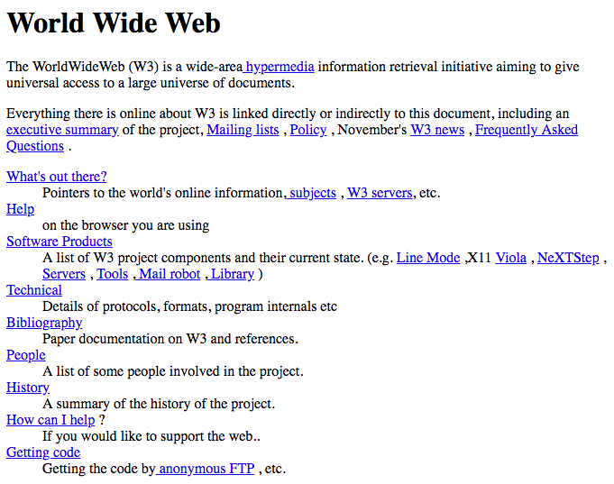
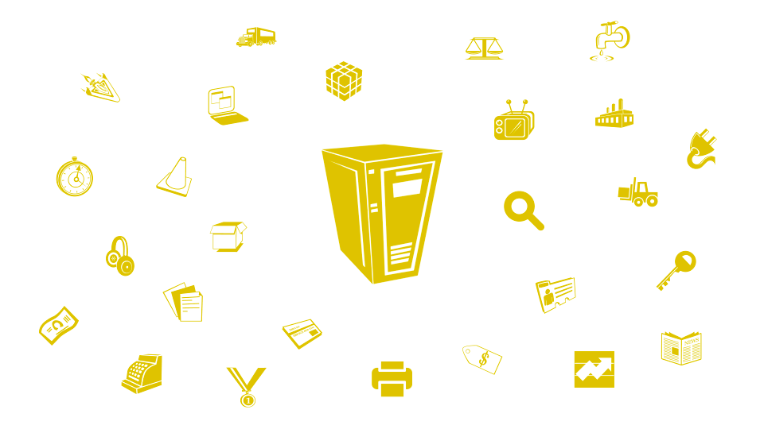
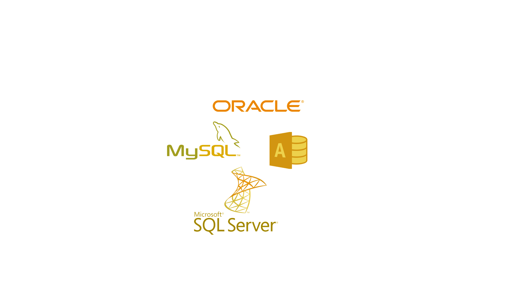
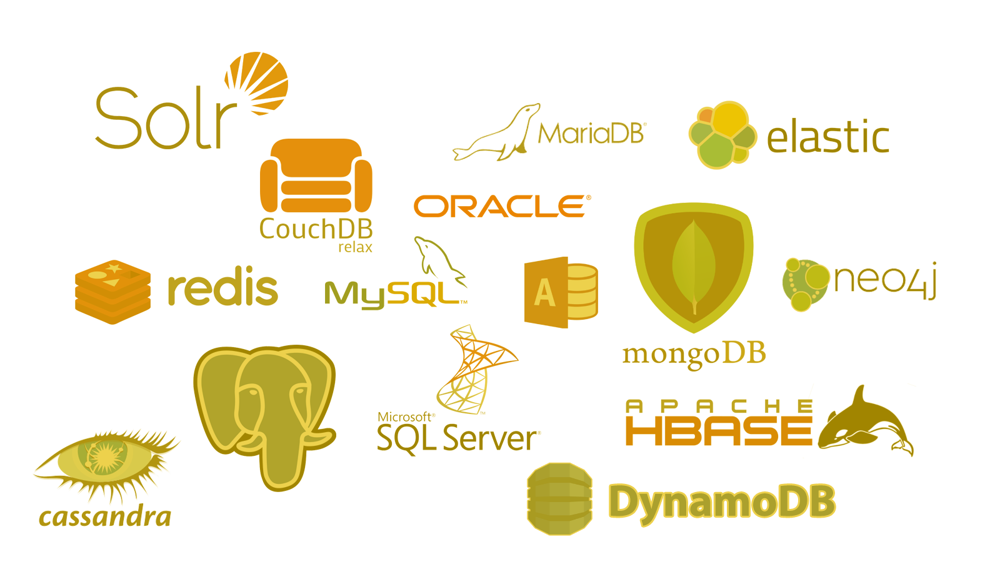
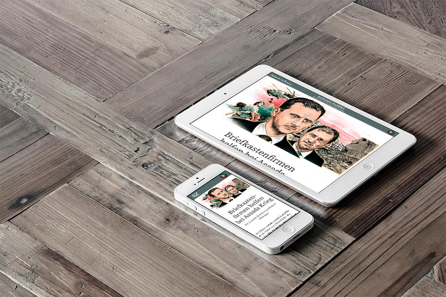
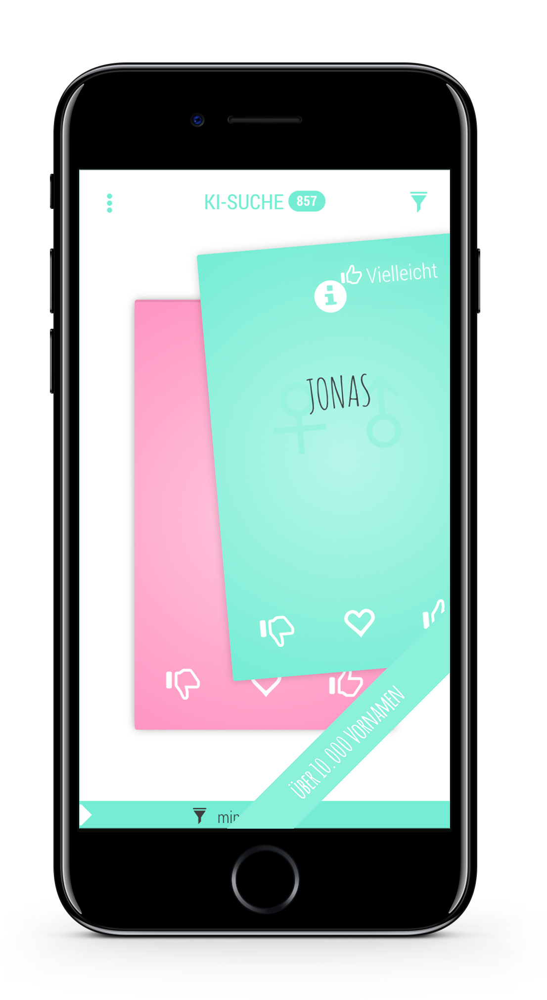

name: cover # Big-IoT-Learning ### Die Zukunft beginnt heute! Stephan Batteiger<br> Peerigon GmbH<br> <img id="slide-cover-img" src="assets/peerigon-logo.png" width="400"> --- layout: true class: theme-whiskey, slides-centered .slides-header[ Warum das Ganze? ] --- class: slides-chapter count: false ## Warum das Ganze? --- ### 1990: WWW<br>Wir brauchen eine Webseite!  --- ### 2004: Social Media<br>Wir müssen twittern/bloggen/posten! --- ### 2007: das erste iPhone<br>Wir brauchen eine App! --- ### Heute: IoT, BigData & Deep Learning<br>Warum das Ganze? --- ### Objektive Entscheidungsgrundlage & Voraussagen --- ### Bessere und schnellere interne Prozesse * Team * Support * Marketing * Vertrieb * Logistik * Finanzen * Personal * ... --- ### Bessere Produkte und Dienstleistungen * Klevere Produkte und Dienstleistungen * Besserer Kundenservice * Weniger Ausfallzeiten * ... --- ### Kostenreduzierung * In allen Bereichen * Aber initialer Aufwand und Wartung --- ### Umsatzsteigerung * Up- und Crossselling * Neue Geschäftsmodelle * Neue Märkte * Kokurrenzfähigkeit * Neue Vertriebskanäle --- ### Freude am Fortschritt / Kreativität --- layout: true class: theme-whiskey, slides-centered .slides-header[ Woher kommen die Daten? ] --- class: slides-chapter count: false ## Woher kommen die Daten? ---  --- --- - An / Aus - Intakt / kaputt - Temperatur - Laufzeit / Gesamtlaufzeit - Lichtmenge (Lumen) - Lichtfarbe - Leistung - ... --- Optimieren: - Lichtschaltung automatisieren - Strom sparen - ... Analysieren: - Wie lange hält die Glühbirne noch? - Wann ist Jemand zuhause? Im Urlaub? - In welcher Stimmung ist die Person? - ... --- layout: true class: theme-whiskey, slides-centered .slides-header[ Rahmenbedingungen? ] --- class: slides-chapter count: false ## Rahmenbedingungen? --- ## Datensicherheit --- ## Datenschutz & Datensparsamkeit --- layout: true class: theme-whiskey, slides-centered .slides-header[ Wie können wir große Datenmengen speichern? ] --- class: slides-chapter count: false ## Wie können wir große Datenmengen speichern? ---  ---  --- layout: true class: theme-whiskey, slides-centered .slides-header[ Was können wir mit den Daten machen? ] --- class: slides-chapter count: false ## Was können wir mit den Daten machen? --- ### Beispiel: [Panama Papers](https://panamapapers.sueddeutsche.de/) - 2,6 Terabyte unstrukturierte Daten - 110 Millionen US-Dollar Geldforderungen - ca. 4.700 Veröffentlichungen (Artikel, Radio- und Fernsehen) - 6.520 eingeleitete Ermittlungen - Mehr Gerechtigkeit  --- ### Beispiel: [CharliesNames Babynamen App](https://charlies-names.com) Daten: ```29822;1023;1;1538932568```  - Beliebteste Namen pro Land - Prognosen - Automatisierung - Namens-Empfehlungen - ... --- ### Beispiel: What Ads work? Daten: ```<a href="konkurrent"><img src="banner"></a>``` - Analyse der Werbebanner - Welche Werbung schaltet mein Konkurrent? - Wo schaltet mein Konkurrent Werbung? - Welche Werbung ist erfolgreich? Welche nicht? - ... --- ### Beispiel: Produktion Daten: ```Maschine;Timestamp;Werkstück``` - Optimierung der Produktion - Qualitätssicherung - Keine Ausfallzeiten - Dokumentation - Lernen - ... --- ### Beispiel: Smart Cities - Ampelschaltungen - Parkplatz Monitoring - Steuerung von Straßenlaternen - Smarte Mülleimer --- ### Beispiel: Smart Home - Staubsaugroboter - Automatisches Nachbestellen - Strom sparen (intelligente Beleuchtung) - Clever heizen (Heizkörpersteuerung, automatische Jalousien) --- ### ... und und und --- layout: true class: theme-whiskey, slides-centered .slides-header[ Die Schritte zur Big-IoT-Learning ] --- class: slides-chapter count: false ## Die ersten Schritte --- ## Die ersten Schritte - Kreativität fördern. Regelmäßige Team Workshops. - Groß Denken, klein starten. - Vom Kunden aus denken. - Investieren. Nicht warten. --- > ### Seid kreativ! Macht das Unmögliche möglich! --- > ### Das habe ich noch nie gemacht, also bin ich ganz sicher, dass ich es kann! Pippi Langstrumpf --- layout: true class: theme-whiskey, slides-centered .slides-header[ Vielen Dank! ] --- class: slides-chapter count: false ## Vielen Dank! Peerigon GmbH<br> Stephan Batteiger<br> mail: stephan.batteiger@peerigon.com<br> tel: +49 821 9078086-1